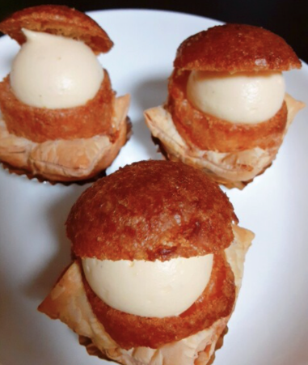

新横浜の天気雨〜降らないで〜
天気予報
DAY1るろ剣と焼肉の旅
12:00 荷物預ける
新横浜駅集合！
そのまま荷物を預ける！
13:00 昼食
新横浜駅から桜木町駅まで15分ぐらい。
そこで昼食！
・候補1：キッチン 大宮 MARKIS みなとみらい店
純白のオムライス & プリン

キッチン大宮 MARKISメニュー
・候補2：キッチンボンノ 桜木町
オニオングランタンスープとか洋食
キッチンボンノ メニュー
14:40 るろ剣ムービー
桜木町駅の近くにある、横浜ブルクでるろ剣を見る！
17:30 ビアード
横浜駅に戻る。
ぽんがの前にビアード買う！
18:00 ぽんが
ビアード買ったらぽんがへ。
ねぎたん以外に何を食べよう
本日のコードギアス
第11話：想いの力

DAY2紫陽花の旅
10:00 ジョナサン モーニング
9時30分にジョナサンに向けて出発！ホリデーだけど、ホリデーじゃないモーニングを頂く！！！！
ジョナサン モーニングメニュー
12:00 北鎌倉駅
11時過ぎに出たら40分ぐらいで北鎌倉駅に到着。円覚寺はそこから歩いて2分。
12:00 鎌倉駅
北鎌倉駅から1駅。
小町通りとかで軽食。お腹空いてなかったら、そのまま長谷駅へ。
またルルルン買う？
13:00 長谷寺と周辺で紫陽花
長谷寺は長谷駅の近く。
近くに鎌倉大仏もある。お土産やさんとかもある感じ。
15:00 カフェ
長谷駅周辺のカフェで休憩
・候補1：オカシゼロヨンロクナナ
美味しそうなケーキたち
オカシゼロヨンロクナナ メニュー
・候補2：カフェ 坂の下
いい景色とパンケーキたち
カフェ 坂の下 メニュー
・候補3：カフェ ルオント（cafe Luonto）
プリンと江ノ電
カフェ ルオント（cafe Luonto）メニュー
・他にも長谷駅周辺はカフェが結構あるから行きたい場所があれば！
16:00 由比ヶ浜と周辺散歩
由比ヶ浜
周辺散歩、いい感じの写真などなど取る
17:30 夜用のスイーツ買う
横浜駅に戻ってくる。
テイクアウトスイーツ買う
・候補1：ガトー・ド・ボワイヤージュ 横浜そごう店
キャラメルシューが美味しそう

ガトー・ド・ボワイヤージュ
・候補2：FLIPPER'S STAND CIAL横浜店
パンケーキパイ
FLIPPER'S STAND メニュー
18:00 ディナー
横浜色々ありすぎて困ったけど、ここ美味しそう
・候補1：BISTRO RUBAN
「自家製のミートソースと生パスタ、チーズが絡み合ってマグマの様に熱々でどこまでも伸びる。」だって
BISTRO RUBAN メニュー
本日のコードギアス
第12話：ラブアタック！
DAY3みなとみらいの旅
11:00 チェックアウト
荷物を預けてチェックアウト
12:00 タリーズコーヒー &TEA横浜元町店
日本大通り駅へ移動。電車で15分ぐらい
紅茶と軽食がおいしそうなタリーズ。
特別なタリーズなんだって〜
13:00 みなとみらい駅
ランドマークタワーとその周りのお店見る。
マークイズもおなじ感じ。
15:30 サーティワンアイスクリーム
アイス！
夕食
未定
解散
気をつけて帰ってね；；